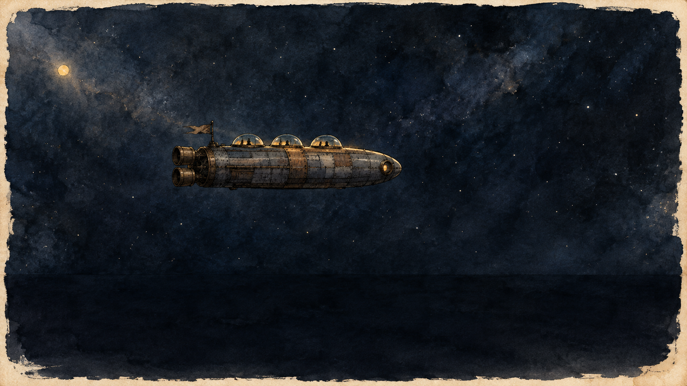
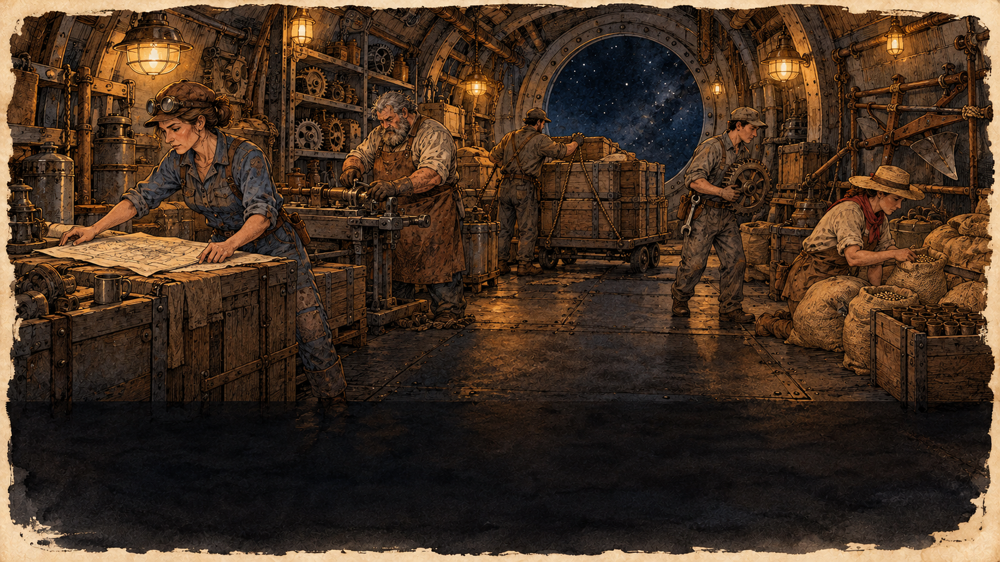
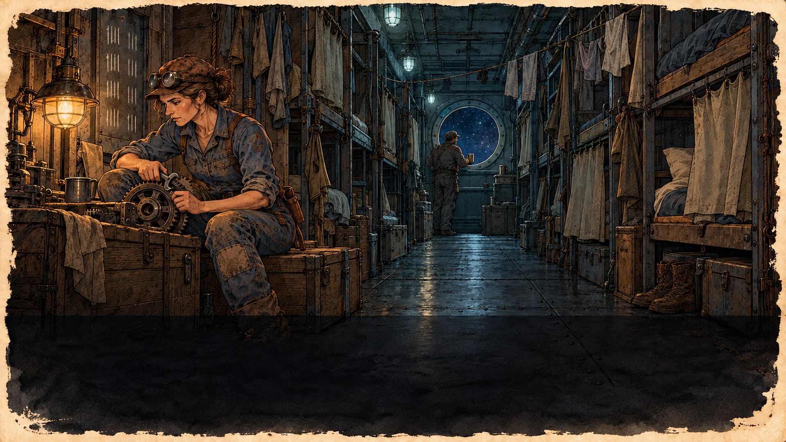
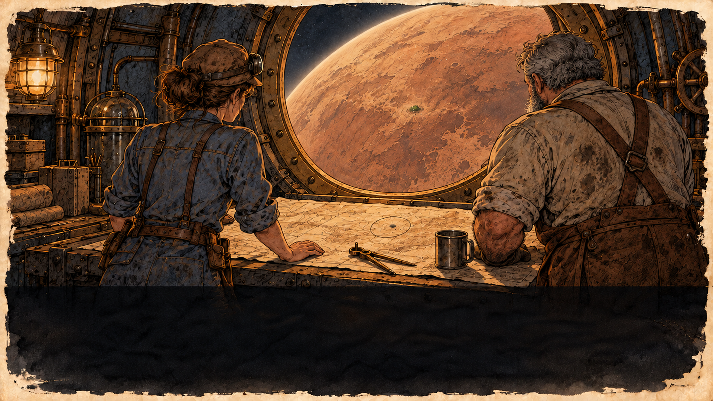
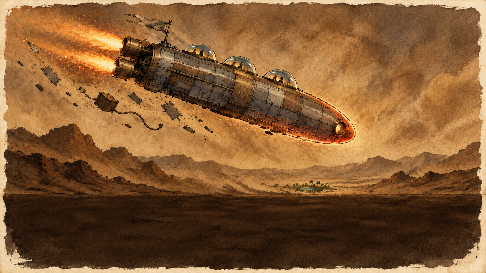
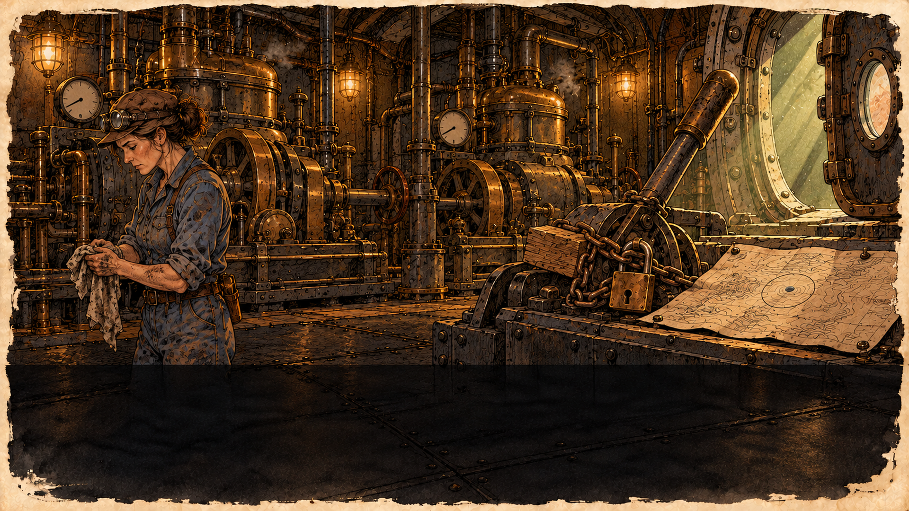
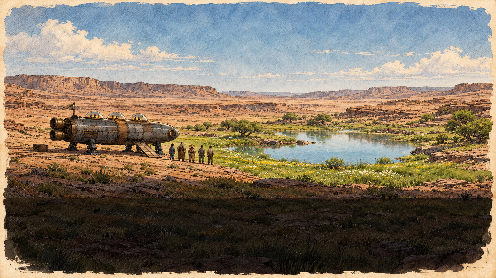

T241 · Cuaderno de bitácora
Siete láminas en estilo A, sin texto incorporado. Pendientes de la revisión de Lucas.
Abrí cualquier imagen para verla completa. El indicador de franja permite revisar el espacio inferior reservado al texto; no modifica los PNG.
Revisar: misma nave (tres cúpulas, dos toberas), ingeniera, herrero, carta y progresión del verde.
Sin Moradores, animales, ruinas, señales ni marcas semejantes al símbolo A.
1 · La nave
1920 × 1080 · 2,771,004 bytes · 2.64 MiB

Zona de texto: y = 842 a 1080

Zona de texto: y = 842 a 1080

Zona de texto: y = 842 a 1080

Zona de texto: y = 842 a 1080

Zona de texto: y = 842 a 1080

Zona de texto: y = 842 a 1080

Zona de texto: y = 842 a 1080
Peso total de los siete finales: 24,354,763 bytes (23.23 MiB).
La integración, las capturas en el juego y el peso de la APK corresponden a T242.